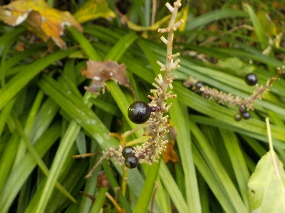
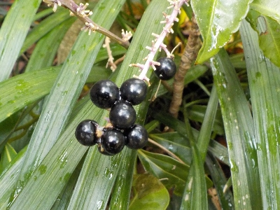
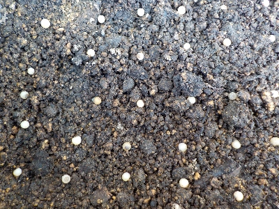
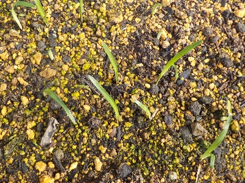
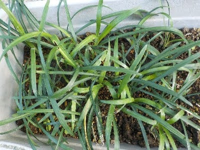
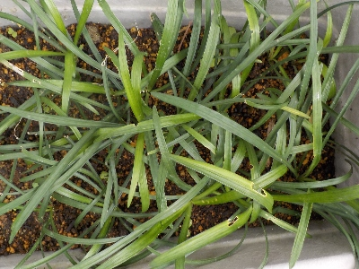
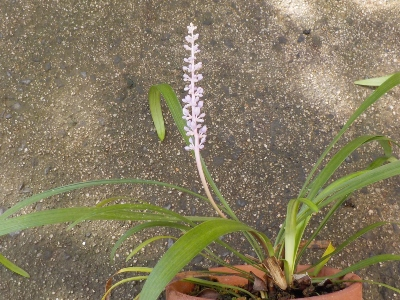

ヤブランの実が出来ています。
更新日 : 2024/11/17

黒い実が出来てました。ぎっしり出来ればいいんですけど、隙間だらけです。
実の裏側を見たら緑色だったので、まだ完熟していないようです。
黒くなったら収穫したいかな。
更新日 : 2024/11/17

黒い実が出来てました。ぎっしり出来ればいいんですけど、隙間だらけです。
実の裏側を見たら緑色だったので、まだ完熟していないようです。
黒くなったら収穫したいかな。
更新日 : 2024/12/22

全体が黒くなったのでヤブランの実を収穫しました。
春になったらポリポットにタネまきするつもりです。
更新日 : 2025/03/22

発芽率がどれくらいあるかわからないですが、成長して窮屈になったら植え替えすればいいので間隔を狭くして植えました。
更新日 : 2025/06/15

3月に種蒔きしてから変化がなかったので、失敗したかと思ってました。
今頃が発芽時期でしたか。
最初の葉っぱがわりと大きいので、今後の成長速度が速いかもしれないです。
更新日 : 2025/10/13

葉っぱが大量で込み合っていますね。何株あるんだろう？鉢に植えるとか地植えにするとか検討が必要になりました。
葉色の濃いものと薄い個体がありますが、この違いって何でしょうね？ただの個体差なのかな。個体差があると思うと楽しいですが、株と株が近過ぎて栄養不足になっていたら問題です。
更新日 : 2025/10/25

ヤブランのプランターを、少し日当たりにいい場所に移動しました。
元気になったみたいで、緑が濃くなりました。実生を植える時は突然変異や個体差を期待してるんですが、今回も特に違いはなそそうです。
正直、変化がなくてつまらないなと思ってます。
更新日 : 2026/08/29

植木鉢で山野草みたいに小さく育てて開花させました。
個人的にはとっても気に入っています。
あちこち植えるのもいいですが、植えたのを忘れて雑草と一緒に抜いたり、雑草に埋もれてなくなったりするんですよね。
小さい個体は植木鉢が丁度いいかな。
葉も花もキレイなので増殖させてもいいですね。